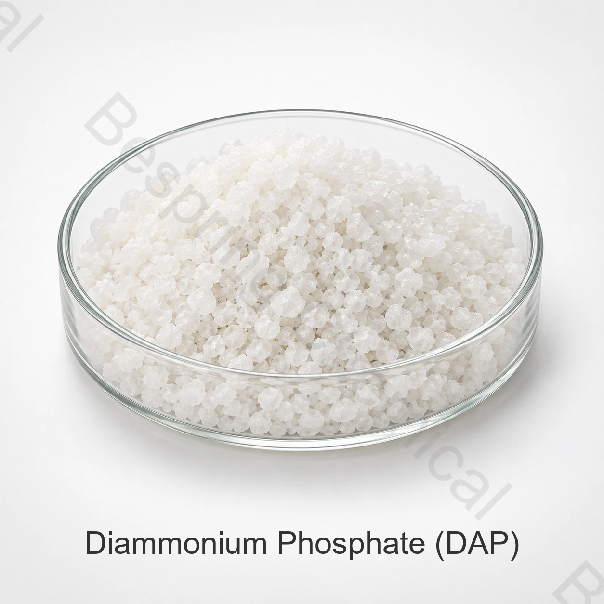

产品身份与等级
说明确切的身份、等级、保证营养分析、形式、用途、数量、包装和目的地。
肥料级 · 磷酸盐肥料盐 · DAP
磷酸氢二铵是一种浓缩型磷酸铵肥料,可直接施用于土壤和混合肥料中,提供氮和磷。
分享保证分析、形式、肥料用途、数量、目的地和文件。

产品概述
磷酸氢二铵是一种浓缩型磷酸铵肥料,可直接施用于土壤和混合肥料中,提供氮和磷。
18-46-0是一种常见的化肥名称;所提供的分析有所不同。 仅凭化学特性并不能确定化肥等级、养分保证、溶解度、作物适用性或市场注册。比较所提供的来源与所需的标签和农业程序。
采购核查清单
索样或下单前，请比较所供等级、应用要求和商业条款。
说明确切的身份、等级、保证营养分析、形式、用途、数量、包装和目的地。
比较具体货源的规格、营养声明、当前COA、包装、国际贸易术语和交货窗口。
在相关情况下，确认溶解度、不溶性物质、源水兼容性、母液浓度和作物计划。
请求 SDS, 非公开产品规格或 TDS, 代表 COA, 批次 COA, 追溯性和目的地市场的文件.
应用评估
这些是资格领域,而不是通用作物建议、营养剂量、标签批准或保证的农业成果。
使用当地农业建议来定义氮和磷的需求量。包括其他化肥和土壤储备的贡献。
将颗粒特性与混合物和处理系统匹配。在批准新来源之前评估分离和储存行为。
在基于土壤测试的养分计划中选择产品。施药位置和施药时间需要当地农业判断。
指定储存气候、袋要求和搬运路线。代表性运输和储存后检查物理质量。
技术选型
请索取所提供等级的氮和磷声明,包括P2O5基础和分析方法。不要在没有规格的情况下假设标准氮磷等级。
商定粒度分布、硬度、细度、水分和结块标准。检查与散装肥料混合物的其他成分的兼容性。
检查不溶于水的物质、游离氨和相关杂质限值。在供应协议中保留批次验收标准。
提供作物、土壤试验解释和施用方法。在接受供应前确认化肥申报和目的地登记。
技术文件
百泉化工不在网上发布此化肥原料的产品规格。联系销售部门了解当前具体货源的规格或 TDS,并确认其修订、分析方法和验收标准。
请求签署的当前规格或 TDS、SDS、测试方法、代表性 COA 和批次 COA。
确认保证分析、表达基础、标签、肥料注册、微量元素和目的地要求。
评估 粮农组织植物营养指南, 粮农组织化肥规格指南 及 NIH PubChem 化学品记录。农业适用性和肥料注册仍然是作物、土壤、配方和管辖区特定的。
农学说明: 此供应商页面不规定营养剂量或确定作物的适宜性。基础肥料的选择和应用,土壤、水和组织数据,合格的农业咨询,相容性测试,批准的标签和当地的环境要求。
储存与操作
化肥买家问题
磷酸氢二铵是一种浓缩型磷酸铵肥料,可直接施用于土壤和混合肥料中,提供氮和磷。应按照土壤或组织测试、作物建议和适用的肥料规则使用。
18-46-0是一种常见的化肥名称；所提供的分析结果各不相同。请求当前具体货源的保证分析,并确认是否以N、P2O5和K2O或其他法律要求的基础表示营养物。
百泉化工不在网上发布化肥产品规格。联系销售部门获取当前具体货源的规格或TDS、分析方法和代表性COA。
仅凭化学名称不确定等级。化肥、食品和技术产品有不同的预期用途、文档、杂质控制和监管要求。
提供确切的身份和形式、所需保证分析、化肥用途、数量、包装、目的地、登记文件、国际贸易术语和交货日期。
内容更新于 2026 年 9 月 13 日。
相关采购信息
应用与选型指南： 复合肥用 MAP 与 DAP 原料。指南用于了解工艺问题，具体供货等级须另行确认。
规格导向型化肥采购
分享保证分析、品级和形式、施肥方法、临界值、数量、包装、目的地及文件清单。